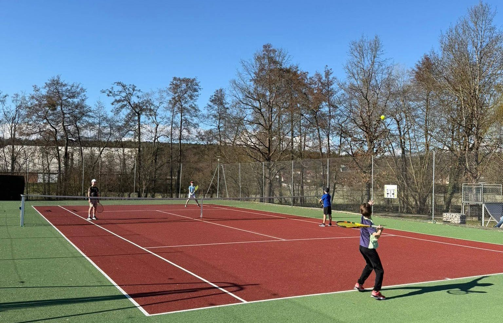

L'école de tennis
C'est 49 groupes répartis du lundi au samedi allant des cours de mini-tennis aux adultes. 6 moniteurs encadrent les groupes tout au long de la saison, répartis par niveau.
350+
Jeunes licenciés
49
Groupes
6
Moniteurs diplômés
6
Jours de cours / semaine
Saison 2026-2027
Groupes et planning
Les cours de l'école de tennis sont répartis par niveau sur la semaine, du mini-tennis aux adultes. Un doute sur votre groupe ? Retrouvez vos cours dans votre application mobile MyTCI, ou écrivez-nous à tennisclubissois@live.fr.
La commission École de tennis, animée par Xavier Rabago et Thierry Hunot avec les moniteurs, prend en charge la vie pédagogique du club.
Elle s'occupe de la gestion du matériel, des choix techniques, de la coordination entre moniteurs pour les équipes encadrées, du repérage des jeunes qui progressent, et de la constitution des groupes de niveau avec leurs horaires.
Les groupes sont formés par niveau, pas par âge seul : un enfant progresse d'un groupe à l'autre au fil des saisons, en fonction de son jeu.
L'encadrement
Les moniteurs
Six encadrants se partagent les groupes de l'école de tennis, sous la coordination de la commission École de tennis.
Xavier Rabago
Éducateur · Coordinateur
Léo Bonin
Moniteur
Mourad El Mjidi
Moniteur
Thomas Lecas
Moniteur
Matthieu Mourot
Moniteur
Elodie Lorilliard
Monitrice
Les jours de pluie
Qui dispose du court couvert ?
Une rotation entre moniteurs
Le club ne compte qu'un seul court couvert pour quatre courts extérieurs. Quand plusieurs moniteurs enseignent en même temps et que le temps ne permet pas de jouer dehors, une rotation détermine qui en dispose.
- La rotation s'applique le mercredi de 11h15 à 16h45 et le samedi, créneaux où plusieurs cours se tiennent simultanément.
- Exception : les séances de Léo après 16h45 ont lieu au court couvert quel que soit le temps.
- En cas de doute, vérifiez auprès de votre moniteur avant de vous déplacer.
L'appli du club
Rester informé
L'application mobile MyTCI donne à chaque adhérent ses cours, ses présences et les messages de son moniteur — et permet d'échanger avec le groupe de son cours.
Rejoindre l'école de tennis
Les inscriptions 2026-2027 sont ouvertes. Un essai est possible avant de s'engager : contactez-nous, on vous trouvera un créneau.